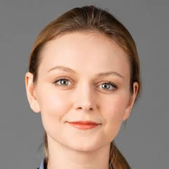
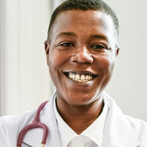

{{p.title}}
{{p.body}}
Our approach
Why neurofeedback
Four reasons families, adults and clinicians choose neurofeedback with BrainTrainUK.
Talk to a practitioner{{p.body}}
What a session feels like
Small sensors read your brain’s activity while you watch a film or listen to music. When your brain moves towards a calmer, more balanced pattern, the feedback responds — and over sessions it learns to stay there on its own.
Why choose BrainTrainUK
with ILF Neurofeedback in the UK
with Advanced Brain Mapping in Europe
with SKIL-based Default Network Neurofeedback outside the Americas
Our services
How we change lives
“{{t.quote}}”
Shared with permission by clients and families. Individual results vary.
Experience you can trust
Our team combines neuroscience expertise with clinical experience built across hundreds of clients since 2013.


Our clinical work has contributed to peer-reviewed literature, including a study published in Frontiers in Psychology (2021).
doi:10.3389/fpsyg.2021.568921Worked with Bournemouth University, Bangor University and local authorities.
Clinics near you
Self-refer and start straight away. Home neurofeedback is supported remotely by our clinicians.
Find your nearest clinicTell us a little about what’s going on. A practitioner will call you to talk it through — honestly, with no pressure.
A member of our team will be in touch to arrange your free 15-minute call.